.jpg)
A comparison of the weather between home and PV Mexico during most of our trip - good trade!
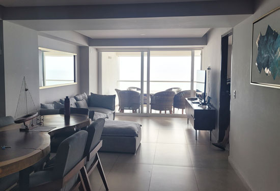
Our first glimpse of our home during our time in Mexico.
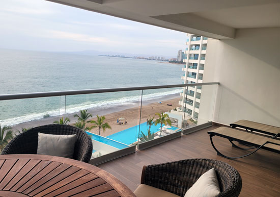
Our balcony was the bomb. It really made the trip having such a beautiful spot to hang out.

Our view of the pools, including a second-story lap pool in the center.
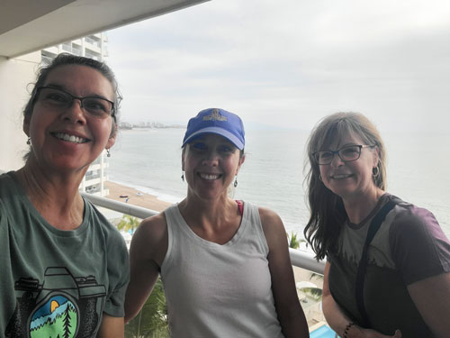
Selfie on the balcony

Taking a walk, we passed this interesting giant bullet thing every day.

At the grocery store, the pepper selection went on for ages!!

I expect these are like Ritz Crackers, I loved the name.
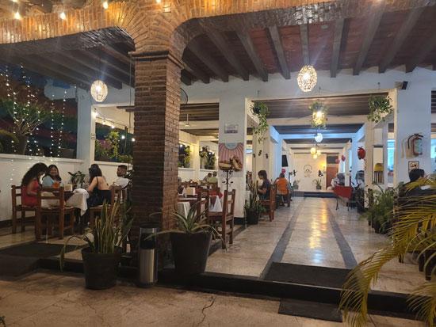
Our first dinner was at the beautiful open-air seafood restaurant around the corner from our condo.
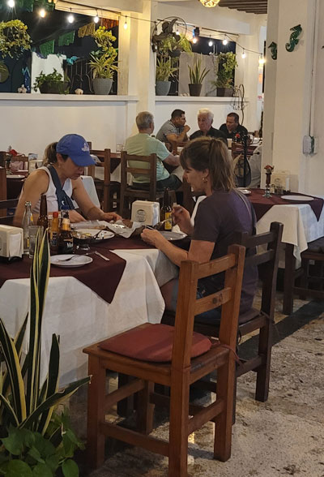
The girls, choosing their dinner. It was all fantastic and very cheap!

Eric's favorite drink was everywhere!

My meal, a mixed grill kabab with veggies that was wonderful.
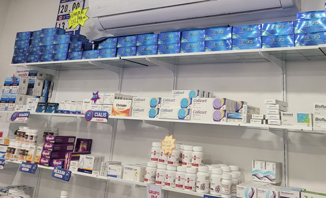
There are pharmacies in Mexico like we have CBD stores in the USA. They have all kinds of OTC medications that would require a prescription at home. Notice what they stock the most? Those little blue boxes are Viagra!!

This sign cracked us up - Boobies & Booties Galore. I'm sure this brings 'em in.

Exploring the condo's pool area at night, it was beautiful.
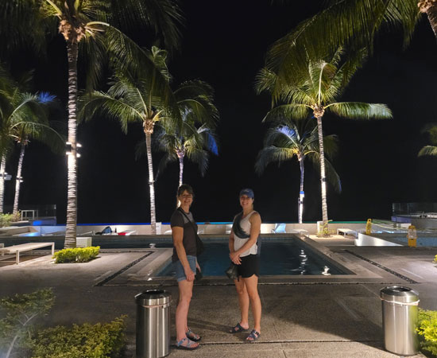

Pretty nice spot for relaxing!

We even found this little Flamingo friend.

My bed was so funny - it was sideways! Everything past my knees hung off the end of I slept on it normally, so I had to lay beside the headboard.
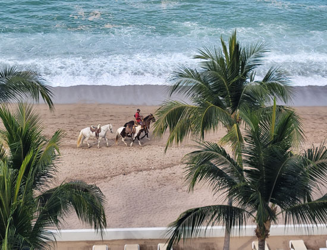
Every day there were strings of horses going up & down the beach, "fertilizing" the beachfront and hoping to talk a tourist into taking a ride.
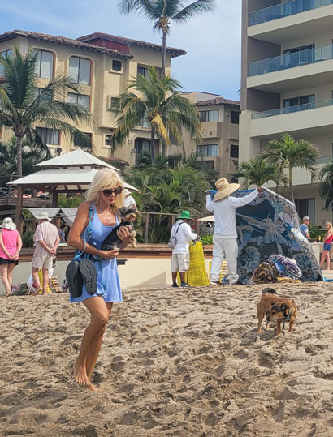
The first few minutes we were at our condo, this lady came down from her room, took one step out of the main door, and let her dogs pee right on the front door frame. I couldn't believe it!
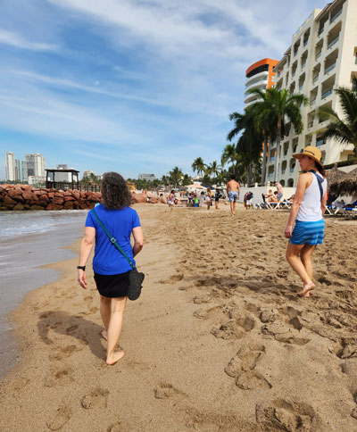
Amy & I during one of our long beach walks.
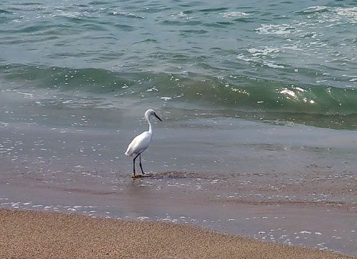
This was my photo of a beautiful Snowy Egret we saw on the beach.
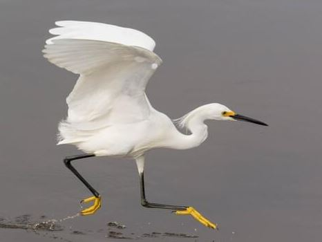
A Google Images photo that does a much better job capturing the beautiful bird.
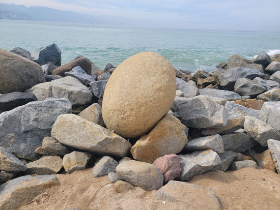
We found this huge, egg-shaped rock to be pretty cool how it's just nestled there in the rocks.
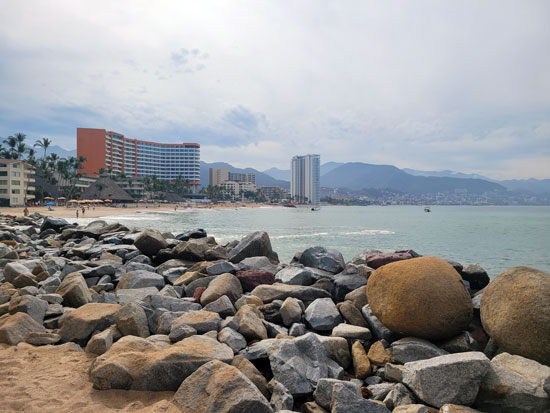
Looking back toward our hotel. I think our place is just past that white tower at the end.
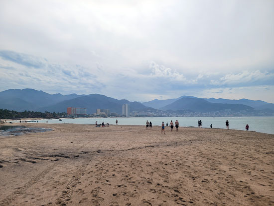
Now we're way out on our beach walk - we went two miles from our place before we turned around.

We were heading out to dinner before too long, so we made a lunch out of Lisa's wonderful handmade salsa on the balcony. It was lovely!

Our evening's entertainment was going to start in this park which was covered in mosaic tiles.
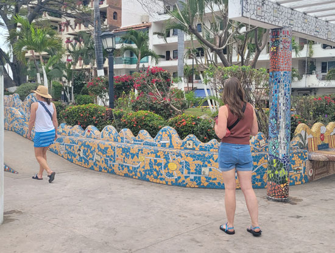
We were early so we went through the park and on out to do a little sightseeing.

More of the mosaic park decorations.
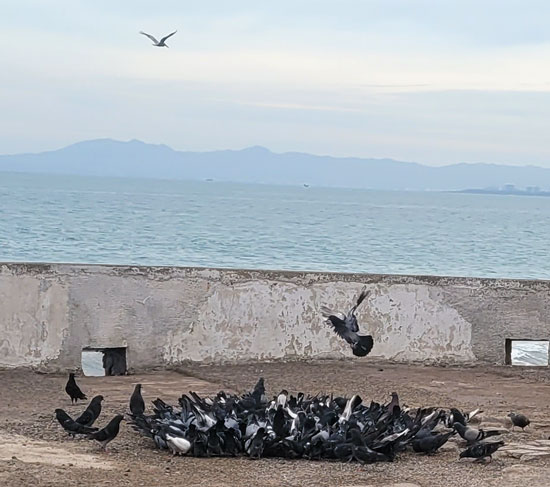
Someone must have dumped something there for the birds, it was crazy!

Getting out onto the Malecon, the giant walkway that runs alongside the beach through town. There are always lots of people out walking there.

The big PV sign, captured at a rare moment with no tourists standing in front of it.

Oh hey, here's some tourists standing in front of it now - Lisa, me, and Amy.

These things looked so fun I just had to try them out. Turns out they rock back too far for me, they were a bit scary!

I loved this statue of two boys (and their dog) trying to get a stubborn burro to go.

Next we went on a "Mex-ology Tour" also called "Tacos & Tequila" We visited 8 different places to try various tacos and fancy drinks. This was a Mexican Sangria called "Red Tide" and it was wonderful.

The grilled shrimp tacos were wonderful too. It was called De Cantaro Vallarta, we went back to this place later in the week for a full dinner there.
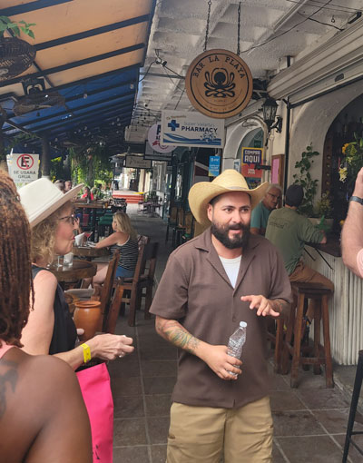
Next stop, Bar La Playa where we had my favorite drink we tried - a cucumber margarita. This is our tour guide, Edgar, he was great.
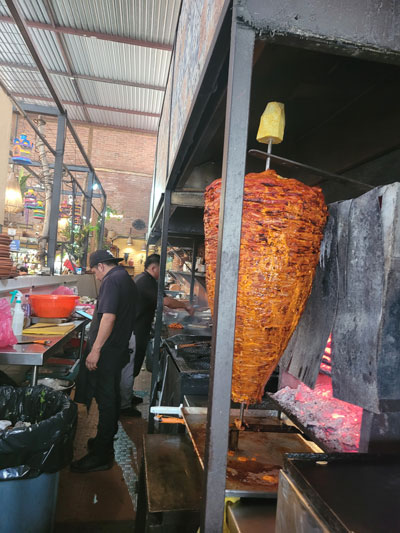
Next was my favorite food of the tour at Sonorita for Pastor Tacos.The meat is done on a spit like Gyro meat, he said there is a strong Lebanese influence in the area. We went back here later also!
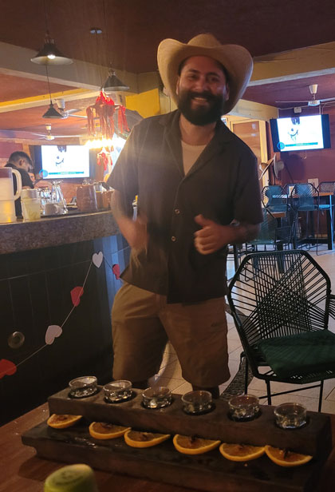
I didn't write down the name of this place where Edgar took us to have tequila shots with a side of dried cricket.

Yes, after you take your sip and do the tasting thing, you're supposed to eat the orange andthe cricket all in one bite as a chaser. I tried, but a cricket leg poked me in the tongue so itall got spit out - oops!

That evening was Lisa's first time to ever do a tequila shot, and probably the last!

A giant, impressive tree we saw along the walking tour. This was outside El Brujo where we had a very tasty Queso Chicharron Taco.

Next we visited Pulqueria Chinga Quedito for some pulque - a non-alcoholic drink that's supposed to have a lot of health benefits.

We had a sampling of 3 things here, one I liked a lot and the other two I didn't care for. I did appreciate the cute little gourds they used for cups.
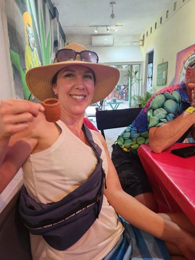
They also gave us a taste of something in these tiny little mugs.


Next stop - street food! We enjoyed a "Cow Head Cheek Taco" at this street vendor.
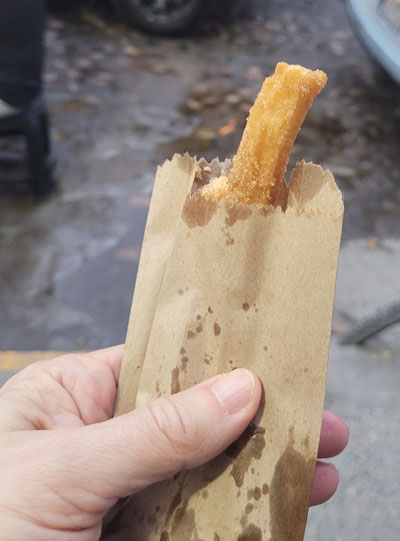
Then he grabbed us all some Churros from another street vendor
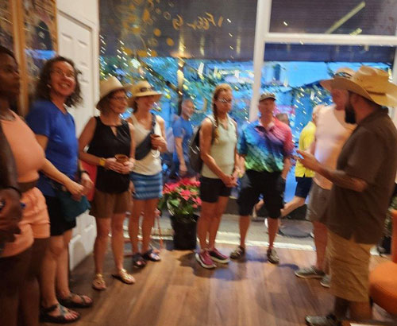
Our final stop for the evening was at Mezcal Y Sal (which is like saying Tequila & Salt)
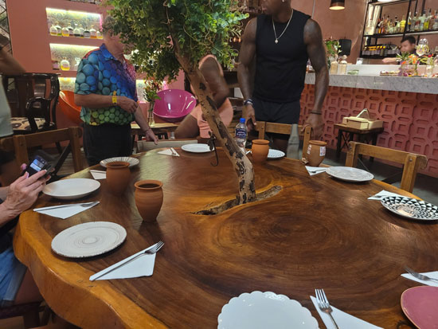
This place was very pretty - our table included a live tree growing up through the center.

Flashback to the first place, this photo got out of order!

Back to the end of the evening, these drinks were lovely but didn't taste very good.

Group photo - we were all pals by the end of this evening of good food and adventures.

Group photo including Edgar.
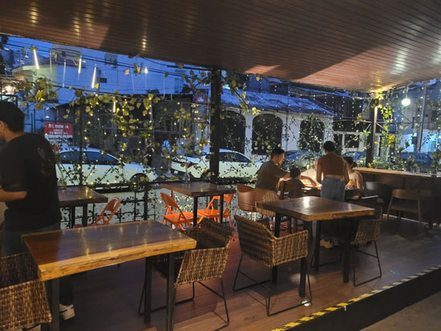
On the way out of the restaurant, a look at how they make their street-side dining very pretty.

Here we are catching the last of the sunset along the Malecon.

Out for a walk with a few hundred other people.

We happened to catch the acrobatic show one evening, I think they do it daily.
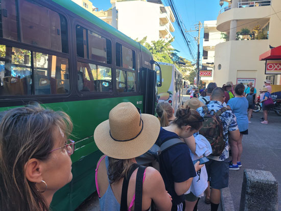
The next morning had us off on another adventure. This one started at a bus stop where we join our tour group for a 40 minute bus ride south of PV.
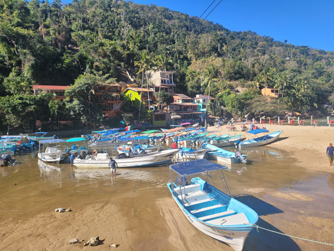
Our first look at Boca de Tomatlan, the start of the hike.

A guy from our group kindly offered to take a photo for us.

Little did we know, he was also sneaking in a selfie each time he took one of us!

Successful fisherman trying to get through the gaggle of tourists.

This stream ran into the ocean at the start of the hike, we had to go around to cross it.

Beautiful bougainvillea
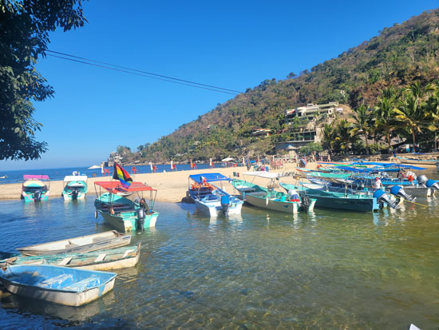
Where the river ran in to the ocean, it made a natural harbor where everyone parks their boats.
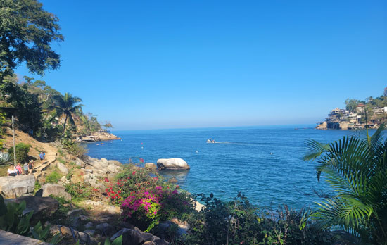
Our first glimpses of beautiful scenery as we started our hike.
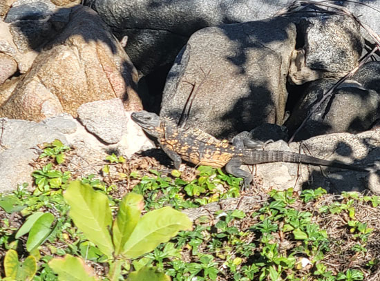
We saw a lot of black iguanas on the hike, our guide Alex told us a Spanish name for them but I've lost it.
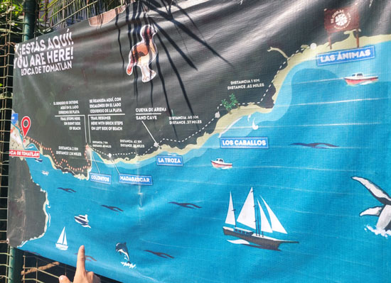
This is a map of the hike we were just starting. We visited 6 beaches and hiked for maybe 2 hours.

Bananas growing along the trail.
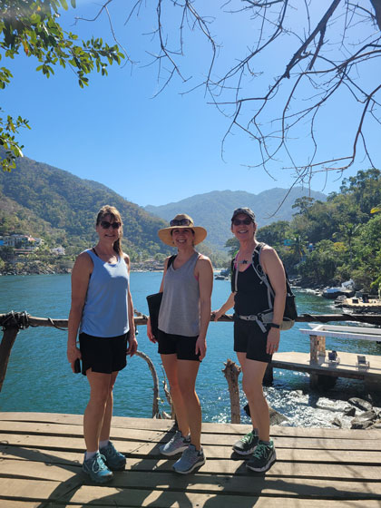
Taking a stop at an overlook. The entire trail is maintained by volunteers, so some of the workmanship is a little iffy.
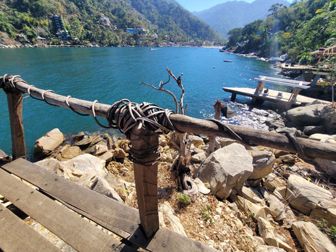
Here I admire how the "safety rails" are held together.

And this shows what we were walking on.

Another black iguana.
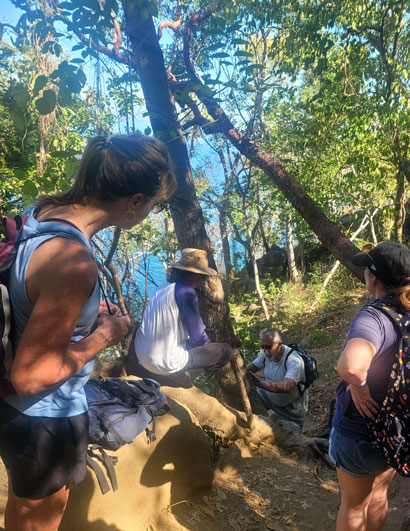
Alex, showing us a chicle tree. It produces a white, gummy sap that was once the main ingredient in chewing gum.
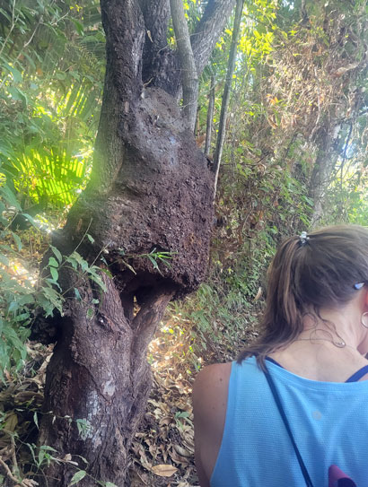
Here we check out a big termite nest on a tree.
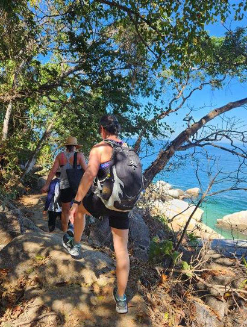
Lisa took these shots of us making progress along the way.
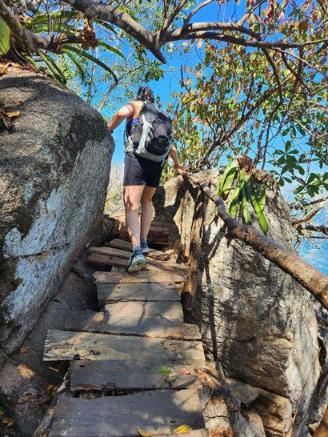
Some more of that workmanship along the trail - but hey, it allowed us to make the trek safely, so it's appreciated!

It was a long haul to get to our first stop. One of our group didn't make it past the first stop, they had to send her to the end in a water taxi.
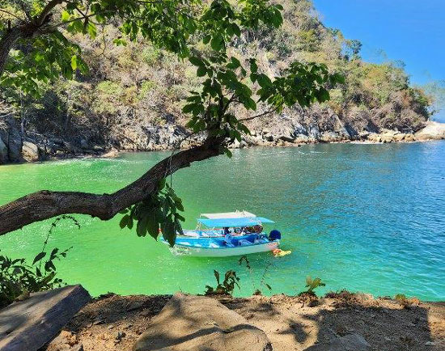
Our first stop was a beautiful beach called Colomitos

We stayed here for about half an hour, long enough to get wet - the water was cold!
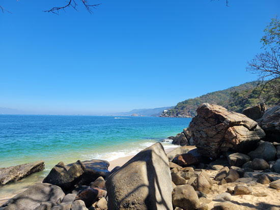
This is the next beach named, "Madagascar"
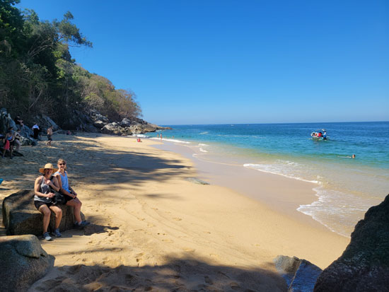
I swam there too, but Amy opted for a nap and Lisa soaked up the sun.
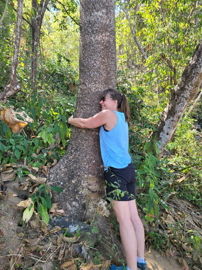
This spiny tree is supposed to take your sadness away if you hug it. Lisa thought it was worth a shot - I hope it worked!
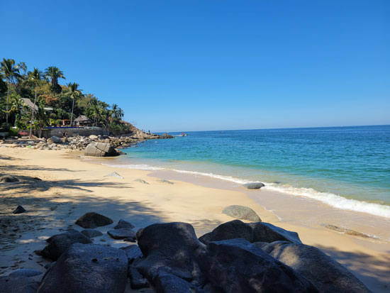
I'm not super clear on the names of the beaches until the end, this is a pretty one that we just walked across.
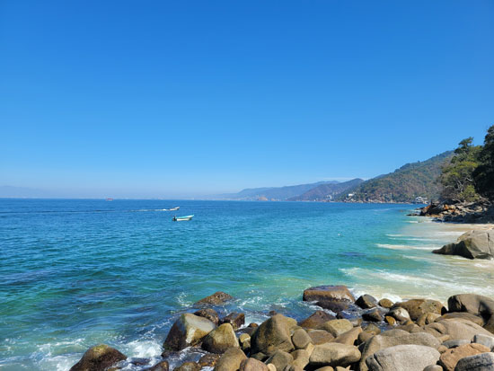
Views from the shoreline.

Parts of the trail were paved through this rocky area, it was pretty.

Group photo on the overlook.
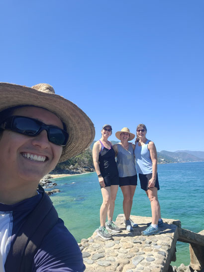
Alex getting in on the shot.

Making our way from beach to beach, Alex did the whole thing barefoot.
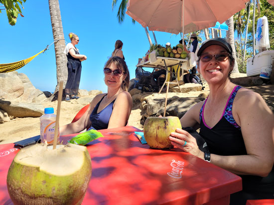
A lady had a table set up selling cold drinks. Amy and I never turn down fresh coconut water when we can get it straight out of the coconut!
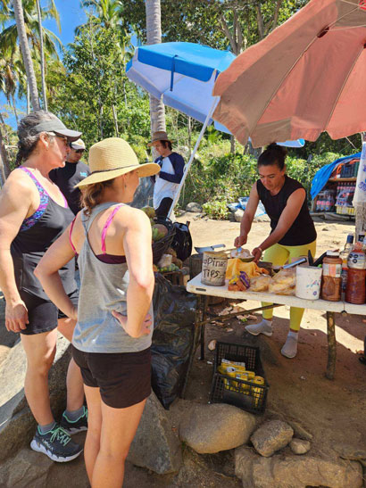
We took them back to have the meat cut out so we could eat that.The hygiene standards were not great - no running water for handwashing, she touched every piece of coconut meat, and paused to cough into her hand. Eric would NOT have enjoyed this!
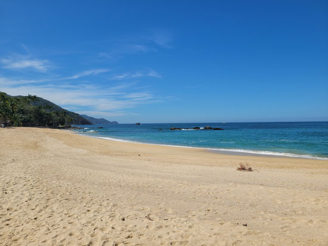
This was our favorite beach of the hike, and Alex hustled us past this one like he was going to put out a fire. This was the only beach that had shells and we wanted to look.
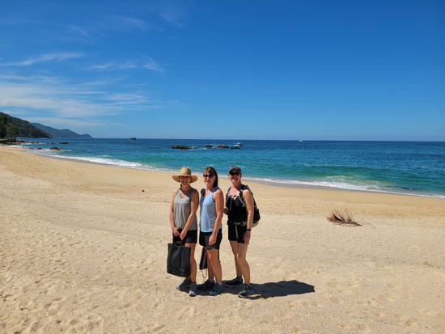
Here our friendly tour-mate offered to take our picture again.

And took a few surprise selfies again as well!
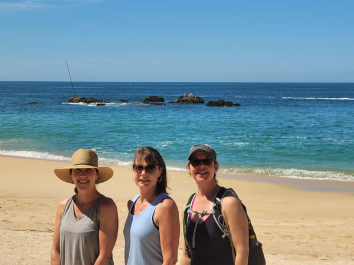
He did capture some great shots of the three of us though, so it was a good trade.
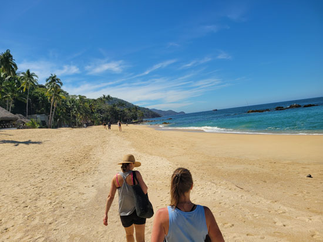
Trying to look for shells while the rest of the group leaves us behind.

Now we're approaching Las Animas which is a water taxi stop and there are a few restaurants.
This lovely spot was our hangout and reward for our long hike. We had a leisurely lunch here.
This Chihuahua made me laugh - it's owner went into a bathroom stall without it, so it was freaking out. Reminds me of my own part-Chihuahua!
Our lovely lunch spot.

Our lady who had to bail spent the day out on the beach under one of these umbrellas, she said she had a good time so we were glad she made the best of her day.

Views from our lunch spot.

Our guide Alex said we had to try a "Coco-Loco", which is coconut water with spirits mixed in. Lisa & I tried one and they came out all decorated up with this fun face.
Lisa & I enjoying our Coco-Loco faces.
This lady brought her Macaw around to raise money for a bird rescue place.
Trying to get a picture of us at our lovely lunch spot.
kept ordering ceviche and it kept being not good - this was like ceviche drowning in ketchup.

A look back at the restaurant from the water taxi pier.
A view from the water taxi. I hoped it would take us back to PV, but alas, we got to enjoy another 40-minute bus ride on a very crowded, hot bus. Oh well, it made us appreciate our shower when we got back to the room!
Sunset from our balcony.

The next morning started with another long beach walk in the morning sunshine.
In some places the sand was very course and had a beautiful sparkle to it.
We took it easy on this day and mostly chilled at the pool. The whales were putting on a big show so that made it exciting.

We went back to Sonorita for more of that pastor meat on a spit. They also had the most amazing, fresh margaritas there

I had cucumber, Amy tried Hibiscus, and I think Lisa had Passion Fruit - all were lovely. One funny thing - tortilla chips in Mexico were very different. Much less oily & salty than we have in the USA, and I missed that salt!
Posing with our lovely drinks and the four kinds of salsa you get.

We also enjoyed amazing guacamole everywhere we went - including what Lisa made at our place.

Group photo.
We all ordered this same dish and we all loved it. It was an open-face al pastor thing with cheese melted on it. Then you dress it up with the four kinds of salsa and it was lovely.
I had told the girls that I look terrible in a hat, so they made me prove it!

Next we walked along the beach further south and saw some beautiful places. At the beachfront restaurant, the tables are surrounded by this pool of water with lilies and candles floating everywhere.

This place offers these cute little private chairs out on the beach.
Restaurant after restaurant stretch out along the beach in this part of town.

A look at the Los Muertos pier, all lit up beautifully at night.

This was a really nice Mexican band that we stopped to listen to for several songs.

Looking out from the Los Muertos pier.
More lovely restaurants on the beach, with the pier in the background.

Now we're walking back along the Malecon toward our condo. There's an amphitheater along the way so we stopped to see what was going on. We watched a comedy show, but it was all in Spanish so we were mostly lost!

I coveted this little girl's lighted balloon! It was magical!
Hey look, my Dad gets his own bus in Mexico!
This was the entrance to the place where we stayed, it was a perfect spot!

On Friday, we created our own excursion to the town of Bucerias, just north of PV.
We had just missed a street art festival, but were in time to see all the beautiful art freshly done.
There were beautiful chalk drawings every few feet on this whole road.

Checking out a house with shells built into it.
We came here to do boogie boarding, but the waves did not cooperate. We ended up finding a beach vendor who made slingshots for Lisa's grandsons.

He wove this pattern onto the handle cover on the spot. It was neat to watch.
Amy hears the sound of angels singing - she LOVES fruit! It was all very wonderful too.
This liquor store sign made us laugh - Tequila is the Mexican cure-all!

Trying to take a picture of the big house built up on that rock bluff, not the random street below.
Beach walking in Bucerias

This dog reminded me of Buddy so I was talking to him in my sweetest voice, he just looked away, completely uninterested. Which is exactlyhow Buddy treats humans who are not me or Eric!!
Back at the pool, the whales were breaching left & right. I couldn't read my book for watching the whales - that's a good problem to have!
These are my attempts to capture some of the whales in action.
I never seemed to catch the splash.

Each beach vacation seems to include foot blisters! This time I got matching blisters on both of my second toes. Thankfully they were easy to cover so they didn't bother me a bit.

This was a mother whale on the left and a baby tail on the right. They come to southern waters to have babies in winter.

We headed to the Zona Romantica for dinner, but realized we were missing the sunset, so we ran down to the beach to watch that before heading back to dinner.

Sunset selfie

The beach chairs are each in their own individual boat. Cute!

Here we are at De Cantaro Vallarta - another place we visited on our earlier food tour.
A lovely grilled shrimp burrito.
Old school break dancing on the sidewalk - I thought I'd never see that again!

Our last day we took another excursion, a boat trip to a snorkel spot called Los Arcos

I took these two photos from Google Images just to show what the area looks like.

The three of us were combined with a group of scuba divers, so we had our own personal guide.
Looking at the first place where we snorkeled.

Group photos before we got started.

Fast forward a couple of hours - we did two snorkels with a 30 minute rest in the middle in order to warm up and to let the scuba divers clear carbon dioxide out of their bloodstream.
They took us up close to this rock to show us some blue-footed boobies. They were so cool!
They were hard to see in my photo, so here's one from Google Images.
Group photo with our guide Eric. Poor Amy was only half-way out of her wet suit when we decided to do pictures!

You can kind of see the arch in that further large rock in this picture. Sometimes they let you snorkel inside there, but the day we went the water was too rough for that.

Back at the marina, this Iguana looks like he's just getting off his yacht.
Fun with languages.

We took a nice walk all around the marina.

Our last sunset in PV!
It was a lovely one.
We were so tired from the snorkel trip that we didn't feel like doing much, so we walked to the nearest large resort hotel to see what was going on there. We found this super cheesy lip sync show that was a hoot. And it included disco, which is one of my favorite forms of music!

In Spanish, the letter V is pronounced like a B. So if you watched this girl's mouth, she was singing, "Like a Birgin". That cracked me up!
Random Mariachi band performing on the street, with a group of people doing a line dance to it. They encouraged us to join, but we were too shy and too tired to give it a try.

The next morning we had to pack up and vacate our place, but the whales were being so active we could hardly focus on packing. That's a big one breaching toward the left of this photo.
There are two whales out of the water at the same time in this shot.

The large dark spot is a whale, the two small spots to the right are people sitting on stand-up paddleboards. They were NUTS!

A last look at the beach from our balcony.
I wanted to get a look at the 2nd-story lap pool before we left. It was neat. Farewell Puerto Vallarta!